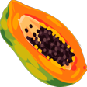
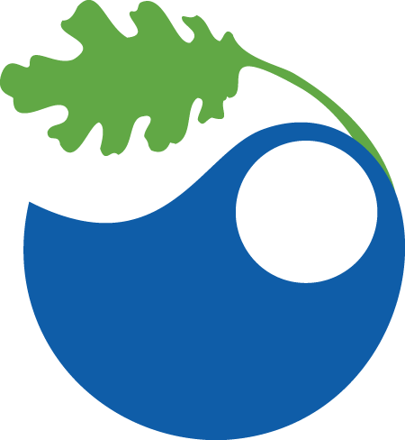

Hiya! I’m Sofia (Sof-aya), it rhymes with papaya 
I am an environmental data scientist devoted to finding evidenced-based solutions to drive informed action and pave the way to a more sustainable future. I aim to bridge the understanding gap between researchers, policymakers, NPOs, private industries, and the public by delivering information in an engaging and accessible way.
I was recently contracted as the Machine Learning Data Engineer and Geospatial Data Analyst for the Los Angeles County Ecological Conservation Project at NASA’s Jet Propulsion Laboratory. For this project I will have the unique opportunity to actively contribute to a forward-thinking project geared towards climate adaptation and local resiliency. I have a learned experience developing geospatial workflows for a variety of geo-data types. As well as a foundational understanding of working with machine learning in tandem with satellite and remote sensing materials, both of which I am excited to utilize. My interests lie in strengthening climate adaptation and resilience in vulnerable communities by supporting clean energy, resource management, extreme hazard preparation/recovery, and pollution mitigation projects. After my time at NASA JPL, I hope to continue participating in projects that elicit real and meaningful change.
Experience
Machine Learning Data Engineer & GIS Analyst | Expected 6/25 - 8/25 |
NASA DEVELOP Analytical Mechanics Associate @ Jet Propulsion Laboratory | Pasadena, CA | Los Angeles County Ecological Conservation Project: Mapping and Identifying the Health of Urban Oak Trees in Los Angeles County
Project Lead & Geospatial Data Analyst | 1/25 - 4/25 |
NASA DEVELOP Analytical Mechanics Associate @ Jet Propulsion Laboratory | Pasadena, CA | San Bernardino Wildland Fires Project: Assessing the Conditions of Pre-Fire and Post-Fire Vegetation in San Bernardino California with NASA Earth Observations
Environmental Data Scientist | 10/23 - 10/24 |
The 2035 Initiative, UCSB | Goleta, CA
Master’s Capstone Lead Data Engineer & Comms Manager | 1/24 - 6/24 |
National Center for Atmospheric Research Climate & Global Dynamics | Goleta, CA
Understanding the Influence of Parameter Value Uncertainty on Climate Model Output: Developing an Interactive Dashboard
Environmental Data Analyst | 12/22 - 6/23 |
UCSD Department of Analytical and Atmospheric Chemistry | La Jolla, CA
Measuring Airborne Toxics and Determining Oceanic Relationships (MATADOR)
Investment Specialist | 7/19 - 8/20 |
Keller Williams Realty, Inc. Partnered with Big H Homes | Westlake Village CA
Education
 Master of Environmental Data Science | June 2024
Bren School of Environmental Science & Management, UCSB | Goleta, CA
 B.S. in Chemistry | June 2023
B.S. in Chemistry | June 2023
University of California San Diego - Earl Warren College | La Jolla, CA
A.S. in Mathematics, Physics, Natural Sciences, and Chemistry | May 2021
Moorpark College | Moorpark, CA